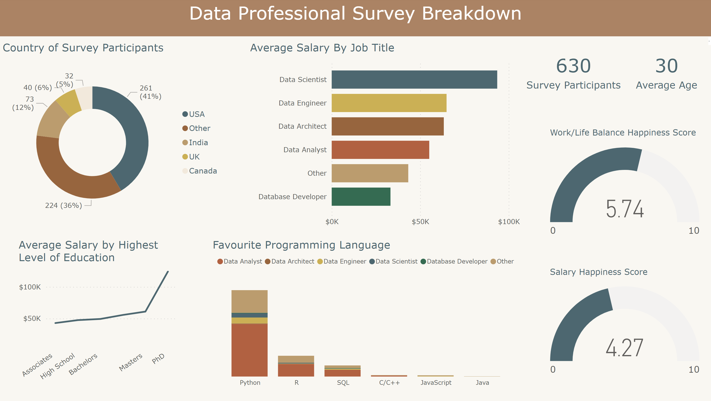

Data Survey Dashboard
P r o j e c t
A fictional news website "Data WW", have conducted a survey of people who
work in the data industry. They have given me the task to clean the data into
usable formats, and create an aesthetic dashboard that displays the findings
effectively.
D a t a C l e a n i n g
The Excel file has a few columns that need to be cleaned. I used the Excel formulas
trim, split, and find & replace to clean and tranform the data that contained spelling
mistakes and formatting differences. These formulas transformed the data in to a
standardized format to be used in producing clean visualizations for the dashboard.
D a s h b o a r d
I built this dashboard using Power BI. I used a range of bar graphs, line charts, donut
chats and gauge chartsto produce a compelling visualization whilst displaying the results
of the survey clearly and effectively. The colour scheme was made to match the colours of
the News Website, which is brown and earth tones.
Sales Report

P r o j e c t
A fictional department store in the US have received their total sales data for the years
2018 - 2021. They have given me the task of producing a dashboard that clearly displays the
quantity of sales, and what category of store and US states are producing the most sales.
They also need to be able to filter between the years to clearly visualize year-on-year changes.
D a s h b o a r d
I built this dashboard using Power BI. My aim was to produce a modern, yet simple and clean
dashboard that is engaging without loud colours to keep a professional feel - I chose a navy
blue colour scheme to emphasize this. I used a bar graph for sales by category to clearly
compare the different groups and display which store type is producing the most sales. I used
a line chart for the quantity of sales as it is a good vizualisation to track changes over time.
I created a map to show which US states had the most sales using colour gradient, with individual
states' sales data displaying when hovering over them.